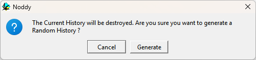
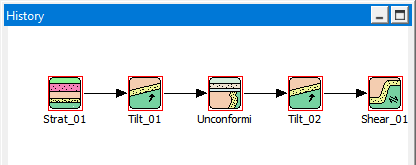
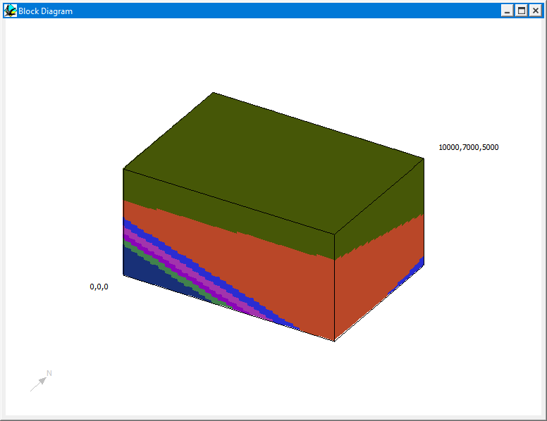

Random histories
replaces the current history with a randomly generated one. If a history is already loaded Noddy asks for confirmation first.

Each random history has five events. It always starts with a Stratigraphy and a Tilt. Each of the other three events is a fold, fault or shear zone (20 % chance each) or an unconformity, dyke, plug or tilt (10 % each), with randomly chosen parameters and rock properties. The events are laid out in the History window and can be edited like any other event.


Random histories from the command line
The -random option generates a random history without opening the user interface. It writes the history to a
time-stamped .his file and also calculates the block model and the gravity and magnetic anomalies:
noddy -random
noddy -random -o mymodelWithout -o the output files are called random_<seconds>_<microseconds> plus the usual
extensions. See Command-line (batch) mode.
Noddy · open source under the MIT licence · Loop3D/noddy_qt